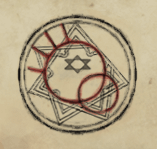

Gro-goroth
Gro-goroth is an Old God who originated from the green hue. Being the god of destruction and human sacrifices, he wishes for blood to be spilled in his name and embodies death and all it encompasses — chaos, anarchy, sacrifice, and war. Destruction is seen as a part of the natural order, with death being necessary to pave the way for nascence and growth, as described in Studies of Gro-goroth. He gifted blood magic to mankind and almost all spells that are associated with him (Hurting, Black Orb) are used offensively. Gro-goroth is a curious god, more so than many of the other older gods. To recreate the feeling of fear, he wears the bodies and skins of men and women alike.
One can strengthen their alignment with him by sacrificing teammates in ritual circles or taking part in the Wolfmasks cult, where its participants maim each other and feast upon their own flesh in honour of Gro-goroth. He grants his followers and disciples incredible power but also corrupts them - the Black Witch and Yellow mages are incredibly powerful beings, but also fragile in body. The Black Witch is described by the New Gods as a "slave to Gro-goroth".
Gallery
-

Asymmetric circle with sigil -
Lucky Coin with Gro-goroth sigil